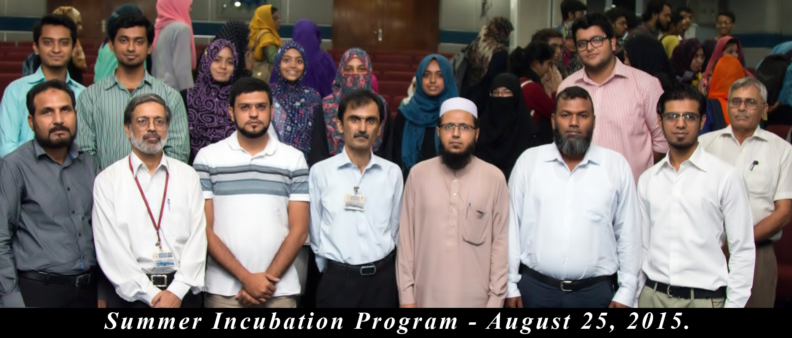

Our Events
CSRD SUMMER INCUBATION
PROGRAM

The Centre for Software Research & Development (CSRD), Department of Computer Science and IT, of the NED University of Engineering and Technology is high-spirited in providing students with the best of opportunities to excel. Among many other ventures that the Centre has been engaged in, was the completion of the Summer Incubation Program 2015 with core objective to provide students a platform where they could excel by utilizing their versatility thus enabling them to face the challenges of the corporate world. During this program, Students were assigned with different projects by real life clients according to their skill sets and through dedication and hard work, they have successfully fulfilled all the requirements of their customers. To celebrate the successful closing of the program CSRD has organized a certificate distribution ceremony to appreciate the internees of the Incubation Program.
INCUBATION OF FIRST EVER
COMPANY "DEVELOPERS#"

Department of Computer Science and Information Technology in collaboration with Centre of Software Research and Development has successfully incubated the first ever company "Developers#". The inaugural ceremony was held on 18th June 2015 in Civil Audio Visual Hall, NED University. It's a startup of two outstanding graduates of NED University, Yasmeen Sahar and Iqra Ghanchi. The main goal behind the establishment of this company was to give an idea of self employment to the young and talented graduates of our university and to provide them a platform where they could excel by utilizing their ingenuity and versatility and make wonders in the IT world. The company started it's journey with a number of successful projects related to mobile application development, website development and desktop application development, namely: GPS Data Collector, Watch & Earn and Cell ID Search. The company has also carried out a number of hands-on workshops for the undergraduate students of CSIT Department. Currently, Developers# is involved in developing website/tool for Canadian real estate agents so that they can develop their own website within few minutes
Workshops
Summer Learning Program

You don't want to misspend your vacations, this summer. Do you? CSRD & NEDUET ACM Chapter brings 4 workshops to let you make the most of your summer break. So what are you waiting for? Register yourselves and avail this opportunity, to augment your skill set.
MEAN STACK DEVELOPMENT
SHORTCOURSE

Centre of Software Research & Development (CSRD) holds a vision to enable students to cope up with the emerging IT trends and so it has taken another step towards their betterment. CSRD and NEDUET-ACM Student Chapter brings a much awaited workshop on Mean stack development by an NED alumnus, Sohaib Nehal. An amazing learning opportunity that you don’t want to miss. So what are you waiting for? Register yourselves and avail this opportunity, to augment your skill set.